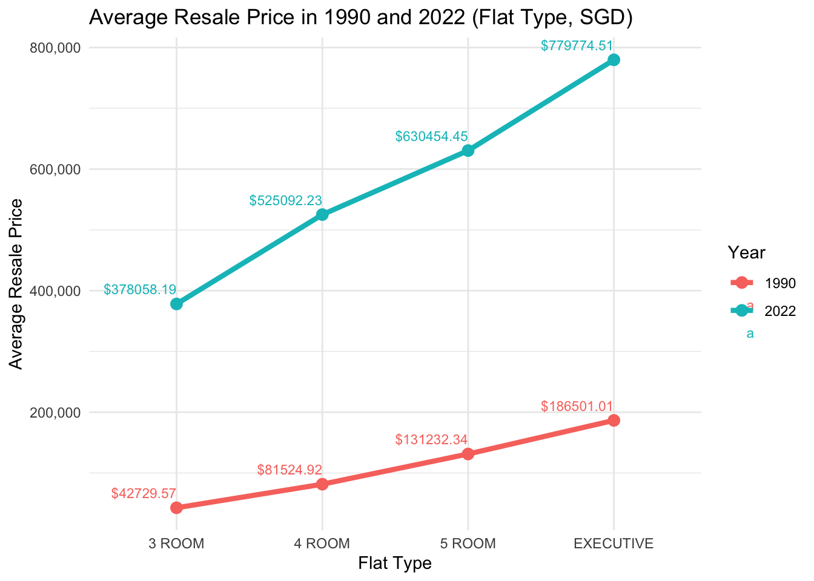
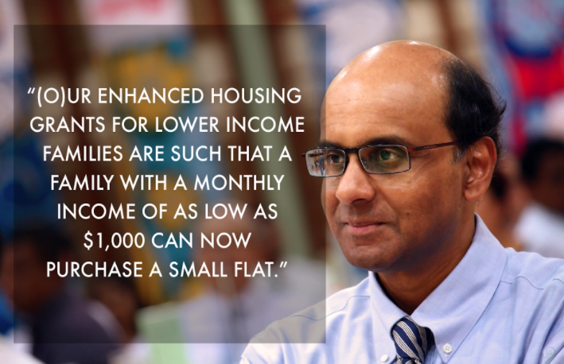
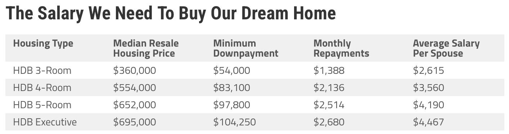
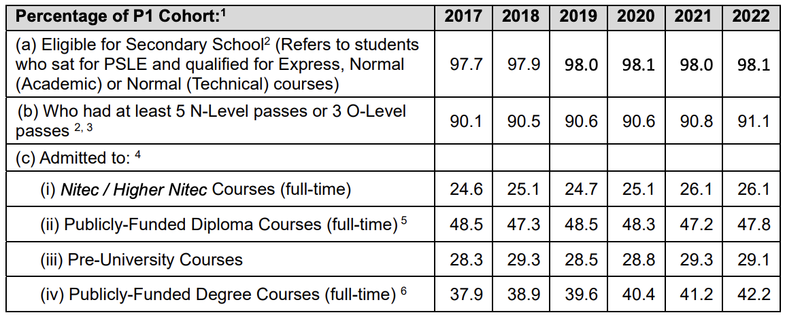

Personal Research and Articles

Here, I have undertaken multiple personal research projects based on my interests. While these initiatives are just for my own skill enhancement, they reflect my commitment to continuously improving my data analysis capabilities. Through these projects, I looked into various datasets, exploring patterns and extracting actionable insights.
This portfolio showcases my journey, illustrating not only my technical skills but also my curiosity and dedication to leveraging data in meaningful ways. Happy reading!
Singapore’s Public Housing Affordability
In Singapore, housing affordability has been an increasing worry for future Singaporeans. However, in 2012, the then Deputy Prime Minister (DPM) Tharman Shanmugaratnam - stating household income of SGD$1000 was sufficient to own a home, sparked discussions among netizen online (Tan, 2012). Read more here…
Is Public Housing Affordable for Singaporeans?
Monday, 6 Nov 2023
Investigating Singapore’s Resale Flat Prices from 1990 to 2022
While Mr Tharman argued the housing grants could provide support for low-income household, many Singaporeans expressed concern about the long-term viability of such claims, especially in the face of the constant rising cost of living and property prices.

Now, this brings an important question to whether public housing in Singapore truly affordable for the average Singaporean in the future. This analysis will also explore the evolving housing market that may impact the affordability of homes for future generations of Singaporeans.
The above concerns will uncover the complexities of the housing market, analyse potential long-term trend, also seek to understand that while variables such as estate, size or remaining lease play significant roles, this analysis aims to identity the most influential factors.

According to Kumar (2022), the affordability of homes in Singapore is a multifaceted issue. The table above provides an outline of the housing prices in Singapore. Using this as a guide, it determines the average salary needed per spouse needed to comfortably afford monthly repayments.
For instance, to afford a 3-room flat, which has a median price of $360,000, both partners would have to at least earn SGD$5,230. While it may seem manageable, this does not account for other living expenses, or other income fluctuation - couple may own a car, or have multiple kids.
Imagine you and your sponse are looking to start a family. Now that we’ve a glimpse into the affordability of homes in Singapore, do you think you can comfortably own your own home when the time comes? Let’s dive into real data and discuss this critical issue further.
Trend of HDB Resale Prices in Singapore
To understand the trend of housing prices in Singapore, the analysis will use the available data sets from this site. The publicly available data contains historical sales figures on yearly bases, and can be used to access market dynamics and predict future trend.
Before moving on to the deeper analysis, let us understand how the overall prices have increased from 1990 to 2022. While the general increase in prices overtime aligns with economic growth, the rate of the surge from 1990 to 2022 is alarming.
One may argue that the increment is a sign of prospering economy, on the other side, it also rings alarm bells in terms of overall affordability. Now let’s examine the graph below:
The graph above illustrates a significant steepening in the slopes of average resale prices in Singapore from 1990 to 2022 - indicating the exorbitant increase of prices across all flat types. The steeper slope in 2022 shows a more prominent price escalation as compared to 1990’s. This is can be an indication increasing pressure on affordability and financial stretch for home ownership.
Notice that on the graph, there is a worrying widening price gap between each successive flat type, with the difference in average prices from one flat type to the next becoming more distinct. For example, the price jump from a 3-room to a 4-room for both 1990 and 2022, may point towards a growing demand for a larger home. Larger home, bigger family right?
With that, we can understand that the widening gap of prices could create a cost burden for upgraders seeking more specious accommodations for a bigger family. The growing gap in prices shows that planning for home ownership is extremely crucial to prevent any buyers’ remorse.
Comparing Average Resale Prices of Flat Types by Years
Now let’s look at the price increment individually for both years, compared with the same flat type. The graph presented shows a great difference for a 4-room flat between 1990 and 2022.
The year 1990 with an average price of SGD$81,525 and 2022 with an average price of SGD$525,092, represented by green and orange respectively. In the graph below, feel free to explore and compare the prices of other flat types between 1990 and 2022!
As mentioned, the rising trend of housing cost, as shown in the graph, indicates that potential owners may face financial barriers when seeking for housing options. Additionally, the graph suggests that the real estate market has become increasingly segmented. Unfortunately, with increasing demand and limited supply, property agents are taking advantage of eager potential home owners (Lam, 2020).
For example, in 2019, a property agent was found guilty of unethical bidding practices in order to cash out a larger commission (Lim, 2019). To curb this, regulatory bodies must enforce strict rules and guidelines to ensure fair practices in this already very competitive and high-stakes market.
The Distribution of Resale Flat Prices of Different Flat Types
While a price increment can potentially indicate a critical issue with affordability, it is also important to access where the increase is still within the “safe” median range. However, in the box plot below, we can see how the presence of outliers underscores the significant and unprecedented price increase.
Hint: Pay attention to how 3-room flats almost hitting $1,000,000! On top of that, we can also visually compare the number of outliers in 1990 and 2022, denoted by the green and orange box respectively.
Let’s input all the flat type options, what do you see? With 3-Room, 4-Room, 5-Room and Executive selected, we can see a consistent pattern. The data reveals a distinct trend where “regular-sized” flats are slowly approaching the million-dollar mark in resale price in 2022.
The upward trajectory is also an indication of the growth in the resale market, reflecting how people are willing to pay for their dream home. This inevitably affect those within a lower income bracket, preventing them to do the same.
Furthermore, across the other flat types, there is an increasing number of outliers beyond the upper whiskers of the box plots for 2022. While this can suggest a substantial market growth, it can also reflect the high number of exceptional cases where resale prices are charging a even higher premium, exceeding the median trends - which is already high.
Now, that we have clearly seen the high prices Singaporean are willing to pay for their dream home, are there other factors that can be attributed to the price increase? Next, we will explore if the remaining lease left or the location of the flat affect the resale price.
The Impact of Remaining Lease on Resale Prices
To lower the cost burden for flat upgraders, some may consider purchasing a flat with a lower remaining lease. However, is there a correlation between the remaining lease and the cost of a resale flat in 1990 and 2022?
As we look and examine into the numbers, it becomes clear that patterns have shifted from 1990 to 2022. Here, we will be comparing the data from these two distinct years. Now let’s look at the scatterplot below. Pay attention to the red line, what does it tell you?
In 1990, the line suggested a clear trend: where a longer remaining lease often correlated with a higher resale price. The regression line showed a noticeable upward slope; decently steep actually. This would indicate that the longer the remaining lease, the higher the resale price of the flat, which makes sense at the time where buyers could reside in the flat without facing any lease expiration issue in the future.
However, as we move to 2022, while there is still a correlation, we can observe that it is not as steep. This suggests that the remaining lease period is not as strong an indicator as it was in 1990. Also, the data points are more spread out , indicating a high variance in resale prices. We can now infer that other factors such as location, types or houses, or amenities have grown in importance of lease length when determining the value of the resale flat.
Put yourself in the shoes of the buyer, would you get a house with longer remaining lease, but with everything else an hour away or a shorter remaining lease with everything else a stone’s throw away?
The answer is not merely a matter of counting the years on a lease. So far, none of the HDB flats have seen their lease expired. So no one knows what really happens after that. Buying your own home is also about weighing the value or time and quality of your daily life. After all, what is a good extended lease if it comes at an expense of your convenience and time? Now, we will look into another important factor: The Estate
The Influence of Estate on Resale Prices
We can agree that price is an important consideration for purchasing a home. Have you figured out where to live? Do you want to live close to your parents in the same estate? Or do you have a preferred school you would like to send your future children too? Now, we will examine if the estate affects the price of the resale flat. We will also determine which estate tends to be more costly or cheaper to settle down.
Now, let’s explore the violin plot on the interactive dashboard. For visualisation, we will use Bukit Timah and Punggol. According to 99.co (n.d), Bukit Timah is known for it access to many well sought after educational institutes such as Hwa Chong Institutions, National Junior College and Raffles Girls’ Primary School, making it one of the most popular estate.
Punggol, on the other hand, is a relatively new estate. It is slowly becoming popular with younger couples due to its modern amenities and promising development plans. The town is being developed with a vision to be eco-friendly, sustainable while providing trendy lifestyle hubs that cater to all age groups.
That being said, let’s analyse the violin plot. We can observe the wider distribution of resale prices, with a more pronounced upper tail. This would indicate there are a larger variety of flats, but also a substantial market for high-end luxury flats.
On the flip side, Punggol has a narrower but dense concentration of price, indicating a more concrete (or less variation) in resale prices. Now, let’s interact with the plot, select your dream estates and explore the price variations! Oh and just in case, I’ll put the MRT Map here for reference!

Now, if we were to deduce on which is the best place to settle down based on what we have gathered, the decision really depends on what you value the most. For instance, if you value tranquility and a sea view, Punggol would be great.
However, if you would like be in close proximity of prestigious schools, (all schools are good schools - but let’s not get into that for now) then Bukit Timah might be the best choice for you! The visualisation does not only tell us about the prices, but also a reflection of lifestyle, and the long-term family vision for you and your spouse!
Conclusion: Why such analysis is important?
Year-on-year, the prices of resale HDB flats have seen a continuous rise, reflecting in a growing demand of housing solutions in Singapore. However, this brings concerns to many Singaporeans, especially younger couples intending to start a family, as they struggle with affordability and availability issues.
According to recent reports, analysts indicated that prices of resale flats are expected to rise moderately for the remainder of 2023 (CNA, 2023). While cooling measures have taken place to control the prices, the growth in the third quarter of 2023 was due to price resistance setting in amid inflationary and affordability concerns.
You might be thinking - ” Aren’t there build-to-order (BTO) flats that are way priced way lower with other grants for purchase?” - and you know what, you are absolutely right! But are you willing to ballot with tens and thousands of couples, wait 5-6 years, and then face the possibility of being turned down? Certainly, the choice to ballot for a BTO flat, despite its lower cost and readily available grants, requires risk-taking and uncertainties.
Therefore, this analysis could provide a thoughtful evaluation of the need for immediate housing against the potential delays and challenges of the BTO process. For now, all we can do is leverage on the available grants and ensure that we spend on what we can afford.
Educational Deviance in Singapore: A Case Study of Truancy and Societal Reaction
This study examines the impact of labeling on student identity within Singapore’s educational system through the case of “Jeremy,” a student labeled as a “truant.” Utilizing a life history interview, the research illustrates how societal reactions and the Compulsory Education Act of 2000 influence behaviors from primary to secondary deviance. Read more here…
Who Determines Deviant Behaviour?
Friday, 10 May 2024

Photo Source: CNA
The findings emphasize the detrimental effects of punitive measures and highlight the need for supportive reintegration strategies. This case underscores the broader implications for educational policy and practices in managing deviance constructively.
Background
In the heart of Singapore’s rigorous educational landscape, shaped by the Compulsory Education Act of 2000, every child is promised a solid 10-year foundational education. But beneath these statistics lies the personal struggle of students like Jeremy, whose life challenges disrupt the ideal path set before them.
The Story of Jeremy
“School was my second home until it wasn’t,” Jeremy recalls, his journey from a model student to a labeled ‘truant’ marked by circumstances beyond his control. When his father fell ill, the burden of financial support fell on his shoulders, forcing him to balance part-time jobs with his studies. This new responsibility led to tardiness and eventually, absences, which didn’t go unnoticed. “I wasn’t just late; I was struggling to keep my life together,” Jeremy shares.
Introduction
The Compulsory Education Act of 2000 (Singapore Statues Online, 2024) is a legal framework that ensures every child born after 1996 receives fundamental 10-year educational experiences, helping to develop a strong foundation in literacy, communication skills, and other moral values (MOE, 2023).
In 2022, the Ministry of Education’s (MOE) Education Statistic Digest reported that 235,116 children were enrolled on a Primary School and more than 98% of the Primary Six cohort were eligible for Secondary School education. Therefore, missing classes or being truant not only goes against societal rules but is also considered “deviant”, leading to social and legal repercussions.

Employing a life history interview approach, this essay explores how labelling influences “Jeremy” – a pseudonym – finds himself consistently confronted with the repercussions of being labelled as a “truant”. Therefore, using truancy and the Education Act as a backdrop, the article will discuss the impacts of societal responses on shaping Jeremy’s identity and also explore his initial behaviours, the impact of the punishments and the motivations that influenced his persistence in truancy during his time in a local secondary school.
Methodology
An hour-long interview was conducted face-to-face in his university hall residence. Having known Jeremy - the interviewee - for five years, his willingness to participate facilitated an open discussion. This allowed him to be honest in sharing his responses, thereby creating a more comprehensive interview. The interview hopes to address his experiences and societal influences that perpetuate his role as a “truant” within Singapore’s educational system.
Initial Challenges
Jeremy’s journey into truancy began subtly, with his behaviours initially deemed to be minor acts. During his time in secondary school, Jeremy had decent grades, great co-curriculum activities (CCA) records, and well-liked by everyone.
However, his life took an unexpected turn when his father fell ill. His mother had to reduce her working hours to care for his father. Being middle class, Jeremy started to pick up part-time jobs to financially support the family. The additional burden started to affect his well-being, physically and mentally resulting in him being late for school – a deviant behaviour according to Asiyai (2019).
Escalation to Secondary Deviance
His exhaustion began to manifest, and his tardiness became frequent and got the attention of his friends and teachers. When inquired about his late coming, his teacher said he “should be responsible for his actions”, which stood out. He retaliated and had to serve detention hours during and after class.
The detentions given by the discipline master were originally intended for corrective measures. According to Salovitta (2017), school detentions are widely used as a method of punishment. However, such practices can alienate, seclude and deprive the student of classes and interactions with their friends. Soon, detentions became a routine, inadvertently becoming a part of his secondary school life as he started to miss a full day of classes.
The Label Begins
During the interview, Jeremy mentioned a term used by this school to describe his offence. “Truancy & Repeated Latecomer Offender”. Furthermore, the detentions exposed him to other students who were deviant actors, reinforcing his behaviours and validating his identity within this marginalised group.
While undergoing his punishment, he began to internalise the label “truant”, given by his discipline master, which influenced his self-perception and behaviours. This would indicate that the measures of detention fail to address the underlying problem, but further perpetuate deviant identities, leading to a “self-fulfilling prophecy” (Merton, 1968)
Discussion Using Theoretical Frameworks
Lemert’s and Becker’s Labelling Tradition
Applying Lemert’s (1951; 1967) Labelling Tradition suggests that societal reaction to minor acts of deviance can drive individuals to exhibit serious behaviours that are consistent with the associated label. Skaggs (2024) asserts, citing Becker (1963), that the sequence from “primary” deviance, where the initial unnoticed and minor acts are labelled as deviant by society. As a result, the internalisation of the status by the individual would eventually accept this label as part of their identity, compelling them to adopt these behaviours more consistently, thus transitioning into “secondary” deviance.
Jeremy’s initial label of a “latecomer” soon solidified into a more damaging label of “truant”. Jeremy’s inability to conform to the school norms led to a negative reaction from both his peers and teacher. His classmates would often remark, “Wah, bro finally show up?” or “Eh not late today?”, indicating a deeper societal rejection, pushing him further into the role his classmates gave him, despite making efforts to avoid tardiness.
As Jeremy’s labels transition, it reinforces his deviant identity, making it even more difficult for him to break the cycle and return to a conformist path – an observation of Durkheim on the functions of deviance in society (Thorlindsson, & Bernburg, 2004). Society used its power to label Jeremy, which acted as a barriers, cutting him off from resources that could help him to reintegrate him back to the legitimate school environment, the classroom, instead of the illegitimate – the detention room.
Merton’s Strain Theory
Merton’s Strain Theory (1957; 1968) provides a framework to further understand Jeremy’s “truancy” as a coping mechanism and adaptation to the socially accepted goal. According to a study done by Curci and Greco (2016), those who exhibit negative emotions such as stress or anger, are more likely to participate in deviant behaviours.
The emotional distress from his situation triggered his adaptation responses. It is important to also note that before committing the deviant act, Jeremy acknowledges that he needs to succeed academically to ensure he meets the societal expectations for material success. However, his father’s unexpected illness created an economic strain that conflicted with his academic goals at that time. According to Merton’s theory, his workaround and “truancy” can be classified as an innovative adaptation where his unconventional means to earn extra money conflicted with institutional norms
Cohen’s Subculture Theory
Cohen’s Subculture Theory (1955) plays a part in Jeremy’s transition from primary to secondary deviance. Cohen (1955) states that subculture – which refers to a group rejected by society, having shared norms and values – arises in response to similar strains experienced by individuals.
Phrases like, “come to school late also get detention, might as well don’t come” , “no point also la, the teachers don’t care about us” and “never mind, join us can already” reflects a shared norm within this subculture of frequent detainees that normalises deviant behaviour. While detention is used to maintain social order in school, these exclusionary practices can eventually lead to undesirable labels, and alienation, and could encourage them to engage in secondary deviant roles (Gerlinger et al., 2021).
Desistance from Deviance
Jeremy’s desistance from deviance can be explored through Hirschi’s (1969) Social Bond Theory. Kotlaja and Meier (2018), cited Hirschi (1969), mentioned that bonds such as family or community can deter deviant behaviours. In the interview, Jeremy mentioned that his father’s health deteriorated quickly and unfortunately passed away four months later.
These social breaks occurred once he realigned his behaviours to ensure that he could provide support for his family through proper education, and as a result, started attending school regularly and is now pursuing an undergraduate degree in a local university in Singapore. His personal loss and familial responsibility align closely with Hirschi’s theory which emphasises the importance of social ties and deterring deviance.
Conclusion
Well, the 10-year Compulsory Education Act has set an expectation for educational attainment, and would be considered deviant if one fails to comply. However, Jeremy’s journey through primary and secondary deviance illuminates the complexities of societal labelling and pressures. His experiences highlight the need to support reintegration over unproportionate measures, to foster a healthier school environment for all students.